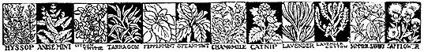
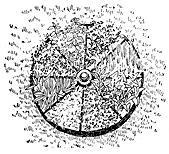

ED used to be a little sarcastic about my herbs - referring to my herb garden as "the weed patch." He claimed he couldn't tell seedlings from weeds.
But since he's seen to what good use I put my few herbs and how little trouble they are, he has a new appreciation of them. Herbs really fall into the woman's department. For although herbs offer a fascinating and learned hobby and can be grown as flowers for beauty, for fragrance, for dyes, vinegars, tea and incense-making, the main use on a homestead is in cooking.
Although I've heard a number of women say their husbands didn't like herbs in cooking, I'm inclined to think that this is one of those preconceived notions that men have about food and ought not to be taken too seriously - especially,when they say it after a dinner they've relished where herbs have perhaps been used without their knowledge in poultry stuffing, soup, tomato cocktail, iced tea, and fruit cup!
I think the reason more of us don't use herbs regularly is because there is so much mumbo-jumbo mixed up in most herb literature just. as there used to be about serving wines. Once people discover, as they have about wine, that you can use any herb you like in cooking, then a lot more of us will use herbs. Of course, certain herbs seem to be "just right" with certain foods.
Any cookbook worth owning, even conservative Fannie Farmer, has something on herb cooking. Usually for the beginner it's too much to take in all at once. So, unless you're an accomplished herb-cook, I suggest you start your herb cooking from the angle of what's easy to grow in a small herb garden.
Herbs take practically no space, and, because most herbs don't need any complicated soil preparation, you can grow them without even bothering your husband by asking him to prepare the ground. Because you need only about a dozen plants altogether; you can probably plan your herb garden and dig it up yourself. Herbs shouldn't be planted in a wet place. A good mix for the soil for herbs is equal parts of compost and loam and double parts of sand - all sifted.
There is little reason for starting herbs indoors. After all, herbs are dried, and when drying is done carefully and the herbs put in screw top jars, they will keep easily from one season to the next. So there's no special need for an early start.
Herbs are propagated from seed, by cuttings or "layering," and by root divi sion. All annual herbs are best grown from seed ... many perennials too.
Herbs are best in their own garden. The closer you can locate this to the kitchen the better - when you want a sprig of mint or couple of herbs for a "rainy day stew," you'll find you just won't want to bother getting in the herbs if they're located too far away.
The wheel garden is made with a heavy wagon wheel. The herbs planted in it should not be too tall growing or the effect of the division by the spokes will be lost. After obtaining a suitable wheel, select a sunny spot on level ground or a gentle slope. Mark around wheel, then dig out the center for hub - the rim should set on the ground. Fill spaces between herbs with sandy loam. If any of the spaces are to be filled with mints, stick plates of metal - old license plates or sheet iron - around the boundary of the mint to prevent it creeping into adjacent beds. Although you can plant most any herbs in this wheel bed, the lower growing varieties make an especially pleasant pattern: parsley, chives, garden thyme, orange or apple mints, lungwort, dietary of crete, thrift, dead nettle - and such annuals as dwarf basil, sweet marjoram, chervil, summer savory, coriander.
ANISE: 75 days. Annual. 8 inches. Always grow from seed, don't transplant. Uses: fresh leaves in salad and as a garnish. Good with fish. Seeds: in bread, cake, stew, soups, candy. Medicinal: tea.
BASIL: Sweet: 85 days. Annual 1 to 1 1/2 feet. Germinates easily in 4 or 5 days - if tops are pinched off plants will bush. Spacing: 15 inches for regular - 6 inches dwarf varieties. In harvesting, when buds appear use both leaves and buds, cut part way to ground for a second crop. Uses: in soups, meat, some salads. Tie in bunches, dry in sun, store.BORAGE: 80 days. Annual (self-sowing). 1 1/2 feet. Blue flowers attract bees. Should not be transplanted. Uses: tender leaves are used in salads and to flavor lemonade and other cool drinks, cooked, in pickles. Flower is candied for confection.
CARAWAY: 70 days. 1 1/2 to 2 feet. Biennial seed; planted one year for harvest the next. Plants to stand 8 inches apart. Cultivate first year. When seed clusters ripen second year, snip plants a foot above ground, dry on old cloth a few days, then thresh seeds by slapping with a small stick. Blow off chaff and store in a tight jar. Early ripening seeds may be planted to give a crop the next year. Uses: in breads, cakes. candies - cabbage, soup and salads, in Sauerkraut, goulash, baked apple.
CHIVES: Perennial. 6 inches. Seeds germinate slowly. Clumps may be divided in Spring. Uses: leaves give mild, onion-like flavor to soft cheese, vegetable cocktail, soup. Bulbs are chopped and added to sausage to give delicate onion flavor.
CORIANDER: 75 days. Annual 1 to 2 feet. Hardy, slow germination, but easy-culture. Can be grown with caraway. Plants should be thinned to stand 6 to 8 inches. Odor and flavor of growing foliage is unpleasant. As soon as seed tops are ripe, they're cut off (heavy seeds easily fall to ground if this isn't done), spread to dry, threshed, and stored in tight glass containers. Uses: in bread, cookies, baked apple, stuffing, sausage.
DILL: 70 days. Annual. 2 to 21/2 feet. Easy germination and self-sowing. 10 inches between plants. Don't transplant. Stake. Uses: for flavoring pickles; also in soups, stews, cream sauce potato salad.
FENNEL: 60 days. Annual. 1 to 2 feet. Sow in moderately rich soil. Don't transplant 8 inches between plants. Uses: Stalks can be eaten like celery. Nutmeg-like seeds used on bread, cakes, sauces, in wine.
MINT: Perennial. 2 feet. Spearmint is ordinary garden variety. Best grown from a few plants. Spreads rapidly in medium rich soil. Uses: in lamb and fish sauces, iced-beverages, fruit cup, in currant and mint jelly, in French dressing for salads. Orange and apple mint not as strong as spearmint.
SAGE: 75 days. Perennial. 1 to 2 feet. 8 inch spacing. Plant seeds; choose "Garden" variety. Uses: as sage tea, in poultry dressing, sausage, soft cheese. Leaves can be smoked as tobacco.
SUMMER SAVORY: 60 days. Annual 1 foot. Seed germinates easily. Spacing 6 inches. Uses: for flavoring gravies, salads, dressings, stews scrambled eggs and sausage.
SWEET MARJORAM: 70 days. Annual. Slow germination. Spacing 10 inches (requires shade until well started). Many uses either fresh or dried: in sausage, meat pies, roast lamb, cheese and egg dishes, peas, beans, and omatoes, in vegetable cocktails.
THYME: 85 days. Perennial. 6 to 12 inches. Plant seeds - thin to about 4 inches. Plants may be divided and reset second Spring. When in full bloom, cut, dry, powder by rubbing and store in glass. Uses: green or dried in soups, stews, sausage , gravies, stuffings, with pork, veal, chipped beer, and especially good on lamb or chevon and chicken.
Suggested Reading: 26 Easy-to-Grow Herbs, 35 cents
|
 |
 |
|